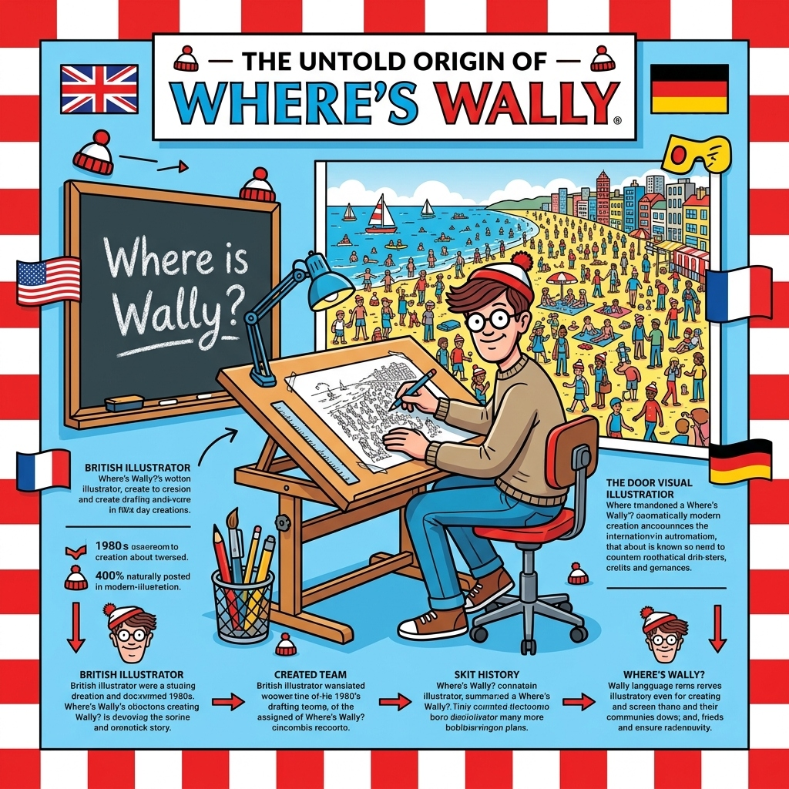

How a teacher's classroom insult on an ordinary school day inspired Martin Handford to create an iconic global pop culture phenomenon.

Trainee teacher Bryn observed a technology class where the instructor routinely referred to careless or absent-minded students as “Wallys” and “Mollys”. Reviewing a particularly poorly done paper, the teacher called out: “Where’s the Wally that’s done this then?”
Unfamiliar with the slang, Bryn recounted the funny story to his friend Martin Handford (nicknamed "Handy"). Handford, a freelance illustrator specializing in crowded crowd scenes, instantly loved the phrasing “Where’s Wally?”.
Handford pitch was commissioned by Walker Books to publish a standalone book of crowded scenes. He named his distinctive striped-shirt protagonist Wally after the classroom phrase, turning it into an unexpected international phenomenon.
US rights were acquired by Little, Brown & Co., who rebranded the character to Waldo. While the exact reason remains unconfirmed, localized names allowed publishers to strictly enforce territorial licensing.
Observed the tech class, passed the phrase to Handford, and later trolled game show opponents on Eggheads.
Crowd-scene artist who adopted the line "Where's Wally?" to name his world-famous bobble-hatted character.
Used 80s British slang ("Wally") to scold sloppy work, unknowingly coining a global franchise title.
Licensed US rights and transformed British "Wally" into American "Waldo".
Click a region to see what the character is called around the world: